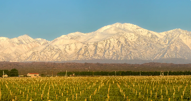
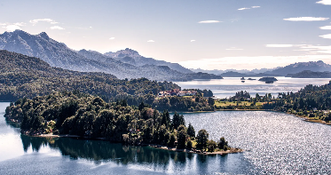
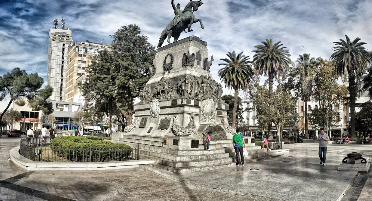

Buenos Aires
Buscar preços

Mendoza
Buscar preços

San Carlos de Bariloche
Buscar preços

Córdoba
Buscar preços
Puerto Iguazú
Buscar preços
Rosário
Buscar preços
Parte 1: Período Pré-Colombiano até a Colonização:
A história da Argentina remonta aos povos indígenas que habitavam a região antes da chegada dos
colonizadores europeus. Diferentes grupos indígenas, como os Guaranis e os Incas, ocupavam o território.
Em 1516, o explorador espanhol Juan Díaz de Solís chegou à região, mas foi
somente em 1536 que Pedro de Mendoza estabeleceu a primeira colônia espanhola, que acabou por falhar
devido
a conflitos com os indígenas e condições climáticas adversas.
Parte 2: Período Colonial até a Independência:
Após várias tentativas de colonização, em 1776, os espanhóis estabeleceram o Vice-Reinado do Rio da
Prata.
Durante o final do século XVIII e início do século XIX, o
Pais foi um centro de agitação política e social, influenciada pelas ideias iluministas e pelos
movimentos de independência na América Latina. Em 1816, os líderes regionais declararam a independência
da
Espanha, formando a Confederação Argentina.
O século XIX foi marcado por conflitos internos e lutas pela consolidação do país como uma nação
independente.
Parte 3: A Argentina passou por uma modernização significativa no final do século XIX, impulsionada pela imigração em massa e pela expansão econômica baseada na agricultura e pecuária. No início do século XX, a Argentina experimentou um período de prosperidade, mas também enfrentou instabilidade política e social. O país passou por governos democráticos, ditatoriais e populistas ao longo do século. Nos últimos anos, o país tem lutado para enfrentar questões econômicas e sociais complexas, mantendo sua posição como uma das principais economias da América Latina.
Buscar preços
Buscar preços
Buscar preços
Buscar preços
Buscar preços
Buscar preços
Apesar de a Argentina ser um destino turístico muito popular, repleto de visitantes (e batedores de carteira
junto com eles), este país está entre os mais seguros da América do Sul. No geral, a Argentina é um país
onde você deve se sentir seguro.
Siga as regras gerais de precaução e o bom senso, e sua viagem será tranquila. O principal problema da
Argentina são os pequenos crimes nas ruas, já que sua taxa é muito alta. Batedores de carteira e roubos de
bolsa são muito comuns na Argentina, na verdade é um risco constante. O roubo de telefones celulares também
acontece, então você deve manter todos os seus objetos de valor fora de vista. Evite usar bolsas e guarde
seu dinheiro em um lugar escondido, não facilmente acessível para batedores de carteira.
Infelizmente, a Argentina está exposta a vários desastres naturais como terremotos, erupções vulcânicas e
tempestades que podem causar enormes inundações (geralmente atingindo os pampas e o nordeste).
Para uma mulher que viaja sozinha, a Argentina geralmente é segura. Você deve saber que à noite você pode
receber alguma atenção indesejada e assobios de homens, então você provavelmente deve evitar áreas próximas
a bares e clubes e ir de táxi, não a pé. Evite andar sozinho em áreas desertas e mal iluminadas. Fora isso,
você não deverá encontrar problemas.
°C
Conheça outros pontos turísticos da Argentina acessando
skyscanner.com.br/© 2023 Latila Tourism